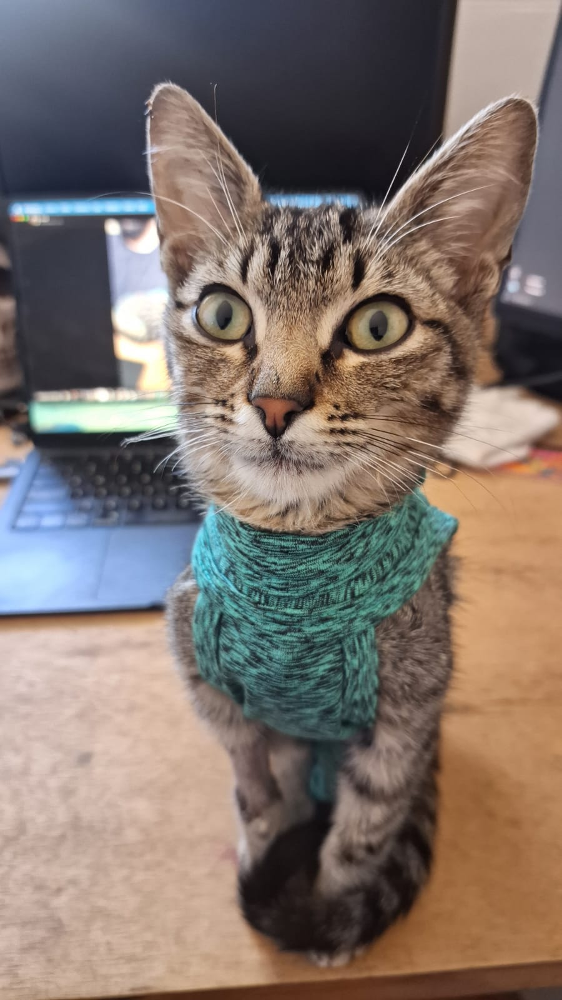
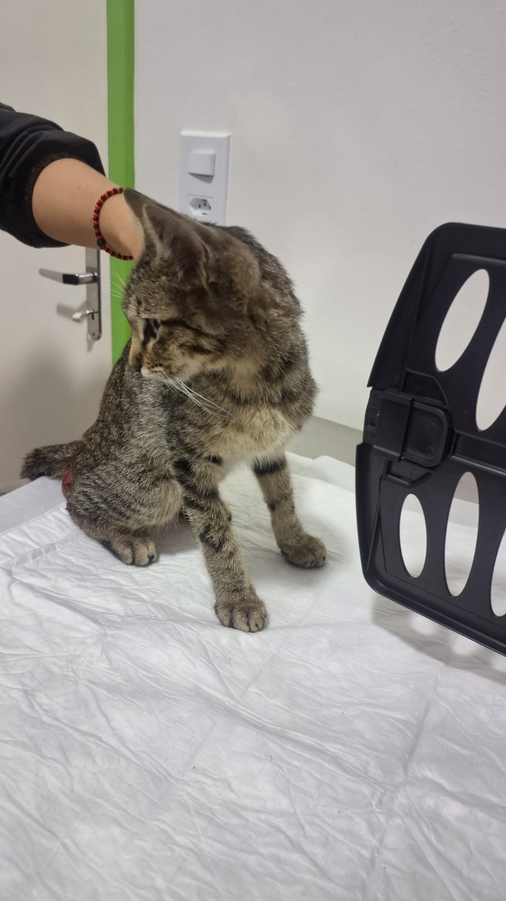
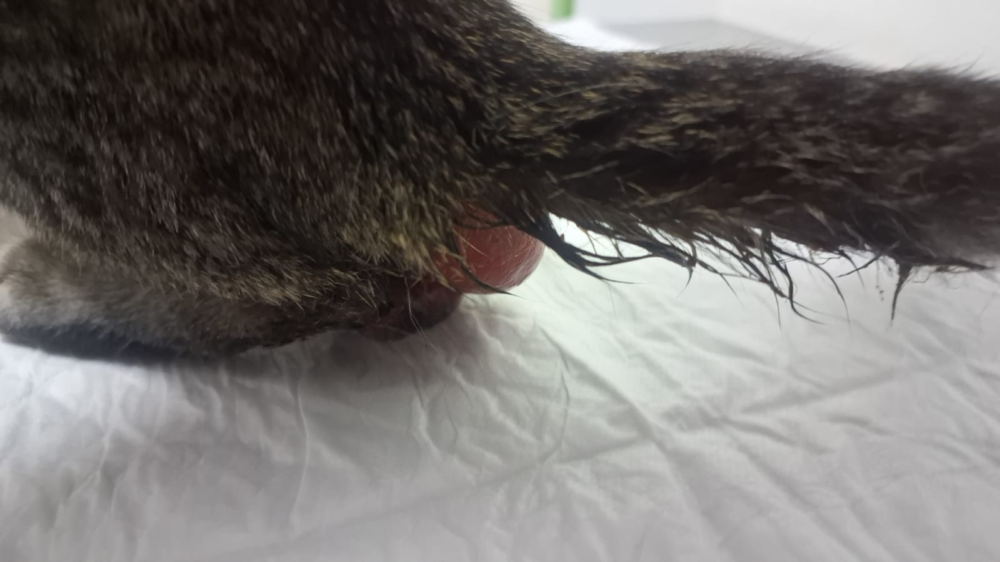
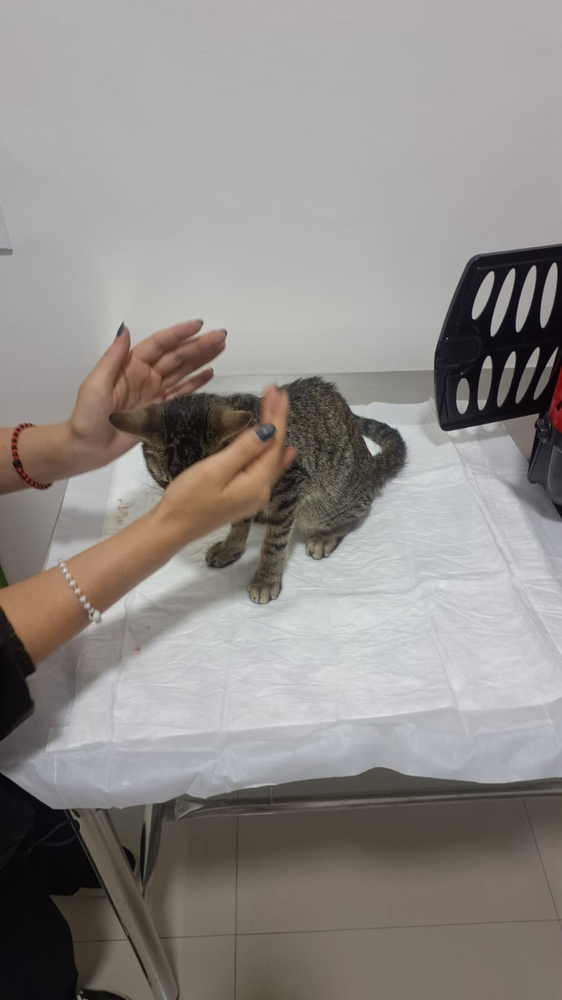
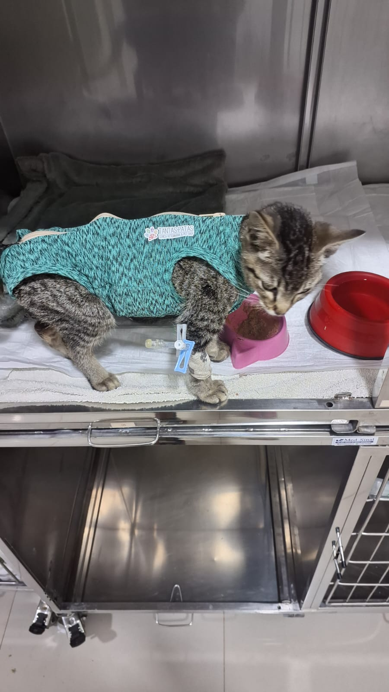
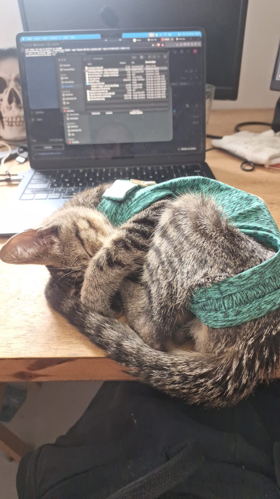

Cirurgia
R$ 2.500,00
Ele foi resgatado com uma lesão grave e precisou de uma cirurgia de emergência.






Precisamos arrecadar fundos para a cirurgia intestinal de emergência do Frodo, internação e medicamentos pós-operatórios. Qualquer ajuda é bem-vinda.
Esse pequeno é o Frodo. 🐱❤️
Ele foi encontrado próximo à nossa casa em uma situação muito grave, com cerca de 15 cm do intestino para fora do corpo e precisando de atendimento veterinário imediato.
Tentamos encontrar algum serviço de resgate ou ONG que pudesse acolhê-lo, mas infelizmente não conseguimos. Já era quase 20h e sabíamos que esperar poderia colocar ainda mais a vida dele em risco.
Mesmo sem estarmos preparados financeiramente para isso — já temos 3 gatos e 2 cachorros — não conseguimos simplesmente deixá-lo naquela situação. Então decidimos assumir a responsabilidade e levá-lo às pressas para atendimento.
Por indicação de uma vizinha, chegamos até a TantasPatas, onde fomos recebidos pela Juliane, especializada em felinos. Assim que avaliou o Frodo, ela percebeu a gravidade do caso e rapidamente mobilizou a equipe, pois ele precisava passar por uma cirurgia de emergência.
Felizmente, conseguimos dar ao Frodo a chance que ele precisava. ❤️
Porém, entre a cirurgia de emergência, atendimento e todos os cuidados necessários, tivemos um gasto de aproximadamente R$ 4.000,00, um valor que não esperávamos e que pesa bastante para nós neste momento.
Por isso decidimos criar esta Vakinha.
Não estamos pedindo que uma pessoa arque com uma grande quantia. Qualquer ajuda faz diferença. R$ 5, R$ 10, R$ 20… cada contribuição nos ajuda a diminuir esse custo e continuar proporcionando ao Frodo tudo o que ele precisa para se recuperar.
E, caso você não possa contribuir financeiramente, compartilhar esta Vakinha também nos ajuda muito.
O Frodo apareceu nas nossas vidas de uma maneira que jamais poderíamos imaginar. Nós poderíamos ter seguido nosso caminho, mas naquele momento sentimos que não conseguiríamos abandonar um animal que precisava tanto de ajuda.
Hoje ele não é mais apenas “o gatinho que encontramos”.
Ele é o nosso Frodo. ❤️🐾
Obrigado de coração a cada pessoa que puder contribuir, compartilhar ou simplesmente torcer pela recuperação desse pequeno. Toda ajuda significa muito para nós — e principalmente para ele.
R$ 2.500,00
R$ 800,00
R$ 700,00
O Frodo já recebeu alta e está se recuperando em casa, com todos os cuidados necessários nesse pós-operatório. A próxima consulta está marcada para o dia 01, quando ele deve passar pela remoção dos pontos e por novos testes de acompanhamento.
Graças aos primeiros apoios, conseguimos agendar a cirurgia para amanhã de manhã. Muito obrigado a todos que já doaram.